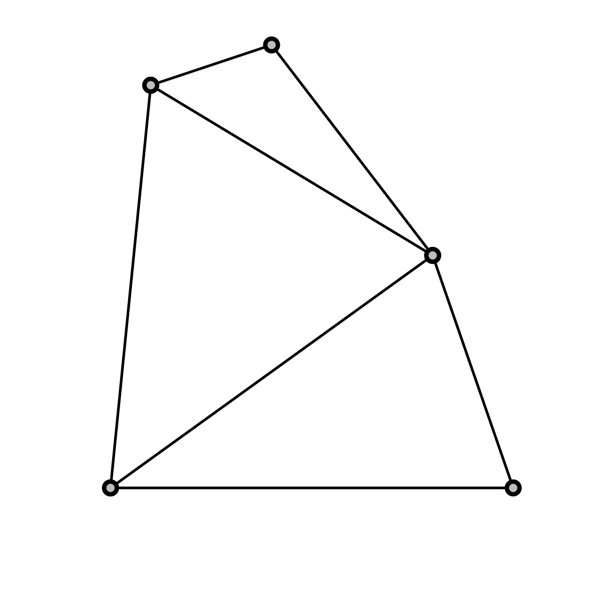
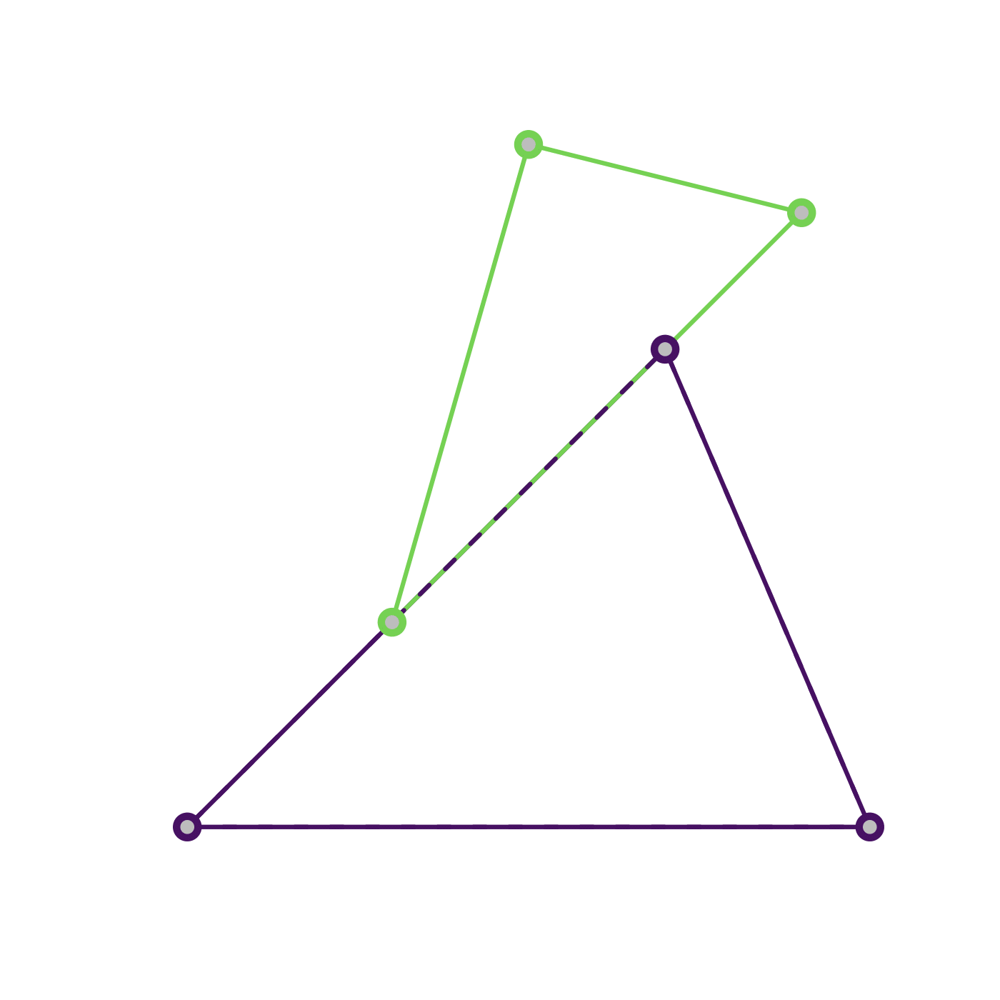
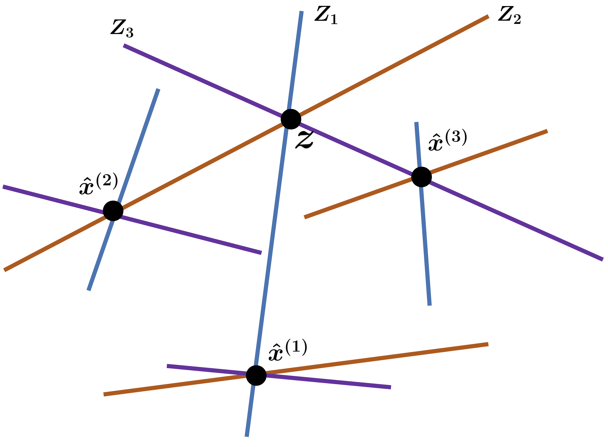

The Simplex Projection
Lossless Visualization of 4D Compositional Data on a 2D Canvas
![]()
% %
This paper is in development for review on the experimental track of the Journal of Visualization and Interaction.
1 Introduction
The visualization of high-dimensional data is a key task in countless domains of scientific research. Yet, the representation of multi-dimensional data in a two-dimensional canvas (e.g., static screens or paper) can pose a significant challenge, leading to substantial information loss or distortions, which, in turn, can skew the interpretation and analysis of the data.
In this paper, we address this challenge by developing a novel approach for visualizing 4D compositional data on a 2D canvas. Compositional data consists of vectors with strictly positive entries that sum to one (Greenacre 2021). This data type naturally arises for proportions, normalized data, or discrete probabilities. Examples for compositional data include (i) the relative composition of the gut microbiome (Gloor et al. 2017); (ii) proportion of peoples’ activities throughout the day (e.g., activity, rest, and sleep; (Dumuid et al. 2020); or (iii) discrete probability vectors, such as posterior model probabilities arising in Bayesian model comparison (Dawid 2011; Schmitt, Radev, and Bürkner 2023).
Our technique, which we call simplex projection, is a lossless visualization method that accurately represents the compositional data while preserving its geometrical and topological properties. We prove mathematically that our mapping from 4D compositional data to its 2D representation is a bijection (invertible one-to-one correspondence) that incurs no loss of information. We demonstrate the effectiveness of our approach, highlighting the simplex projection as a potent tool for exploring and analyzing 4D compositional data. While the underlying mathematical treatment holds for arbitrary finite dimensions, throughout the paper, we will focus chiefly on illustrations and intuitions for the 4D case.
2 Preliminaries
Throughout this manuscript, let \(J\in\mathbb{N}\), and the points \(v_1, \ldots, v_J\in\mathbb{R}^J\) be affinely independent, that is, \((v_2-v_1), \ldots, (v_j-v_1)\) are linearly independent. Further, the points \(v_1, \ldots, v_J\) are the vertices of the \((J-1)\)-dimensional simplex \(\Delta^{J-1}\) defined by the set
\[ \Delta^{J-1} = \Big\{ x\in\mathbb{R}^J: x = \sum_{j=1}^J\pi_j v_j \Big\}, \tag{1}\]
with weights \(\pi_j\in(0,1)\) such that \(\sum_{j=1}^J\pi_j=1\). When the dimension of the simplex \(\Delta^{J-1}\) is sufficiently clear from the context, we drop the superscript and simply write \(\Delta\).
The representation of a point \(x\) through weighted vertices, that is, via coefficients \((\pi_1,\ldots,\pi_J)\) in Equation 1, is commonly referred to as barycentric coordinates with respect to the vertices \(v_1, \ldots, v_J\). For brevity, we will slightly overload the notation and use the vector of barycentric coordinates \((\pi_1, \ldots, \pi_J)\) to refer to a point \(x=\sum_{j=1}^J\pi_j\,v_j\) in the simplex with vertices \(v_1,\ldots,v_J\) as defined in Equation 1. Since any two simplices of equal dimension \(J\) are homeomorphic by a simplicial homeomorphism (Lee 2000), the exact location of the vertices \(v_1, \ldots, v_J\) is irrelevant and we will use regular (aka. equilateral) simplices for all illustrations.
The convex hull of each non-empty subset of size \(N\) from the \(J\) vertices \(v_1,\ldots,v_J\) of a simplex \(\Delta^{J-1}\) is called a \((N-1)\)-face. In particular, the \(0\)-faces are the vertices, the \(1\)-faces are the edges, the \((J-2)\)-faces are the facets which we denote as \(\sigma\), and the only \((J-1)\)-face is the simplex \(\Delta^{J-1}\) itself. We denote the facet opposing a given vertex \(v_j\) as \(\sigma_{-j}\)
Renormalized Barycentric Coordinates
Let \((\pi_1, \ldots, \pi_J)\) be barycentric coordinates with \(J\) components, as defined above. For an index subset \(K\subseteq \{1,\ldots, J\}\), we define \[ \Big(\tilde{\pi}_k\Big)_{k\in K} = \left(\dfrac{\pi_k}{\sum\limits_{k{'}\in K}\pi_{k{'}}}\right)_{k\in K} \tag{2}\]
as renormalized barycentric coordinates (mind the tilde to differentiate between vanilla and renormalized coordinates). The term “renormalized” is motivated by the normalizing effect of the denominator in Equation 2. While a simple subset of compositional data does not generally sum to one, \(\sum_{k\in K}\pi_k \leq 1\), it is easy to show that the renormalized barycentric subset sums to one, \(\sum_{k \in K}\tilde{\pi}_k = 1\). Moreover, the ratio of every two renormalized coordinates \(\tilde{\pi}_n, \tilde{\pi}_m\) equals the ratio of the original coordinates \(\pi_n, \pi_m\) since these ratios are clearly invariant to the division by the same normalizing constant,
\[ \frac{\pi_n}{\pi_m}=\frac{\pi_n / \sum_{k\in K}\pi_{k}}{\pi_m / \sum_{k\in K}\pi_{k}}\overset{\text{def}}{=}\frac{\tilde{\pi}_n}{\tilde{\pi}_m}, \] as depicted in Figure 1.
Simplicial complex
Following the definition of (Lee 2000), a simplicial complex \(\mathcal{K}\) is a set of simplices in an Euclidean space that satisfies (see Figure 2 for an illustration):


A simplicial complex \(\mathcal{K}\) is a pure simplicial complex if all simplices \(\sigma\in\mathcal{K}\) have equal dimension. In what follows, we will project a point \(x\) from the \((J-1)\)-dimensional simplex \(\Delta\) onto \(J\) points \(x_1,\ldots,x_J\), where each projected point \(x_j\) (\(j=1,\ldots,J\)) lies in a \((J-2)\)-dimensional simplex \(\sigma_{-j}\), and all simplices \(\sigma_{-1}, \ldots, \sigma_{-J}\) form a pure simplicial complex. Since the number of lower-dimensional simplices \(\sigma\) and the dimensionality of the higher-dimensional point \(x\) are equal in our application, we refer to both as \(J\). Further, we will need to refer to the set \(\{x_1, \ldots, x_J\}\), where each point lies in exactly one simplex \(\sigma_{-j}\) of the simplicial complex \(\mathcal{K}=\{\sigma_{-1},\ldots,\sigma_{-J}\}\), and the indices \(j\) coincide (see previous section for details on the \(-j\) index notation). We capture this with the following product notation: \[ \prod\limits_{j=1}^J \sigma_{-j} = \sigma_{-1} \times \ldots \times \sigma_{-J} = \Big\{ x_j \,\Big\vert\, x_j\in\sigma_{-j} \Big\}_{j=1}^J \]
Perspective Projection
Let \(\Delta\) be a (\(J-1\))-simplex and \((\pi_1, \ldots, \pi_J)\) be barycentric coordinates of a point \(x\in\Delta\). Then, we define \[ \begin{equation} \begin{aligned} \psi_j: \Delta&\rightarrow \sigma_{-j}\\ x&\mapsto \psi_j(x)\\ (\pi_1, \ldots, \pi_J) &\mapsto \left( \tilde{\pi}_1,\ldots, \tilde{\pi}_{j-1}, \tilde{\pi}_{j+1}, \ldots, \tilde{\pi}_J \right) \end{aligned} \end{equation} \tag{3}\]
as the perspective projection of \(x\) about the vertex \(v_j\) onto the opposing facet \(\sigma_{-j}\). This corresponds to shooting a ray from the vertex \(v_j\) through the point \(x\), and the intersection of that ray with the opposing edge is the image \(\psi_j(x)\). Figure 1 provides an illustration for a triangle (2-simplex) \(\Delta\) with edges \(v_1, v_2, v_3\), where the perspective projection \(\psi_1\) projects the point \(x\) about the vertex \(v_1\) onto the opposing edge \(\sigma_{-1}=\overline{v_2v_3}\) (\(\overline{AB}\) denotes a line segment from \(A\) to \(B\)). It is evident that perspective projection about a vertex \(v_j\) is the geometrical equivalent to renormalization Equation 2 after removing the \(j^{\text{th}}\) component. For the theorems below, it is crucial that perspective projection does not affect the ratios of the remaining components’ barycentric coordinates.
4 Simplex Projection
We leverage the structure of compositional data to propose a visualization method with less image dimensions than data dimensions. Precisely, we show that all the points in a higher dimensional simplex can be projected onto its facet without loss of information by proving that our simplex projection is bijective. Consequently, compositional data with any dimension can be projected onto a 2D canvas. However, in this paper, we specifically highlight the case of \(J = 4\) components, that is, data that could be na”ively visualized via a tetrahedron. After proving that the method acts as a bijective mapping between the full-order simplex and lower-order multivariate marginals for single points, we show how the method generalizes to entire sets of points and even to continuous probability density functions.
Single Point
Consider a point \(x\in\Delta\) in the \((J-1)\) simplex. In the following, we will prove that a specific set of perspective projections \(\big(\psi_1,\ldots,\psi_J\big)\) constitutes an invertible mapping function \(\phi\). That is, we can reconstruct the original point \(x\) from its image \(\phi(x)\) under the mapping function \(\phi\). The exact form of \(\phi\) is illustrated in Figure 4 and formalized below.
Theorem 1 (Bijective simplex projection for labeled points) Let \(\Delta\) be a \((J-1)\)-simplex, \(\mathcal{K}=\left\{\sigma_{-j}\right\}_{j=1}^J\) be a pure simplicial complex of the facets of \(\Delta\), and \(\psi_j(x)\) the perspective projection of \(x\) onto \(\sigma_{-j}\) about the vertex \(v_j\). Further, let \(\mathrm{Img}_{\phi}\) be the image of \(\phi\), as detailed in the Appendix. Then,
\[ \begin{aligned} \phi: \Delta &\rightarrow \mathrm{Img}_{\phi}(\Delta)\\ x & \mapsto \left( \psi_j\left(x\right)\in\sigma_{-j} \right)_{j=1}^J \end{aligned} \tag{4}\]
is a bijective mapping from the \((J-1)\)-simplex \(\Delta\) to the set of compatible projections in the product set of the \((J-2)\)-facets of \(\Delta\). What is more, only two matching projections \(T\in\sigma_{-1}, R\in\sigma_{-2}\) onto different simplices \(\sigma_{-1}, \sigma_{-2}\in\mathcal{K}\) suffice to uniquely define the original point \(x\in\Delta\).
Proof. The proof will show that \(\phi\) is a bijective map by proving that \(\phi\) is invertible.
Let \(x=(\pi_1,\ldots,\pi_J)\in\Delta^{J-1}\) and \(\phi(x)\) be the projections of \(x\) onto the respective facets as defined above. The projection on each facet \(\sigma_j\) is described by the renormalized barycentric coordinates after removing the \(j^{\text{th}}\) component
\[ \psi_j(x) = (\tilde{\pi}_1, \ldots, \tilde{\pi}_{j-1}, \tilde{\pi}_{j+1}, \ldots, \tilde{\pi}_J) \]
by definition in Equation 4 and Equation 3. By repeatedly removing another component and re-normalizing the coordinates, we can extract numerical values \[ \frac{\pi_n}{\pi_m}=r_{n,m} \] for the ratios of all pairs of barycentric coordinates of the original point \(x\) because the barycentric coordinate ratios are invariant to projection. In the following, we will only consider the ratios of subsequent components, i.e., \(\{\frac{\pi_1}{\pi_2},\frac{\pi_2}{\pi_3},\ldots,\frac{\pi_{J-1}}{\pi_J}\}\). The other ratios are not required to solve the problem at hand. Recall that the constraint \(\sum_{j=1}^J\pi_j=1\) still holds for the barycentric coordinates of \(x\). This yields a system of \(J\) equations
\[ { \renewcommand\arraystretch{1.33} \left\{ \begin{array}{@{}l@{}} \pi_1 / \pi_2 = r_{1,2}\\ \pi_2 / \pi_3 = r_{2,3}\\ \hspace{1cm}\vdots \\ \pi_{J-1} / \pi_{J} = r_{J-1,J}\\ \pi_1 + \ldots + \pi_J = 1 \end{array} \right. } \Rightarrow { \renewcommand\arraystretch{1.33} \left\{ \begin{array}{@{}l@{}} \pi_1 = r_{1,2}\pi_2\\ \pi_2 = r_{2,3}\pi_3\\ \hspace{1cm}\vdots\\ \pi_{J-1} = r_{J-1,J}\pi_J\\ \pi_1+\ldots+\pi_J = 1 \end{array} \right. } \Rightarrow { \renewcommand\arraystretch{1.33} \left\{ \begin{array}{@{}l@{}} \pi_1 - r_{1,2}\pi_2 = 0\\ \pi_2 - r_{2,3}\pi_3 = 0\\ \hspace{1cm}\vdots\\ \pi_{J-1} - r_{J-1,J}\pi_J = 0\\ \pi_1+\ldots+\pi_J = 1 \end{array} \right. } \]
with \(J\) unknowns and the matrix representation
\[ \begin{aligned} \underbrace{ \begin{pmatrix} 1 & -r_{1,2} & 0 & \cdots & 0 & 0\\ 0 & 1 & -r_{2,3} & \cdots & 0 & 0\\ \vdots & \vdots & \vdots & \ddots & \vdots & \vdots \\ 0 & 0 & 0 & \cdots & 1 & -r_{J-1,J}\\ 1 & 1 & 1 & \cdots & 1 & 1 \end{pmatrix} }_{=\mathbf{A}\in\mathbb{R}^{J\times J}} \begin{pmatrix} \pi_1 \\ \pi_2 \\ \vdots \\ \pi_{J-1}\\ \pi_J \end{pmatrix} = \begin{pmatrix} 0 \\ 0 \\ \vdots\\ 0 \\ 1 \end{pmatrix} \end{aligned} \]
which can be solved since \(\mathbf{A}\in\mathbb{R}^{J\times J}\) clearly has full rank \(J\). The solution \((\pi_1,\ldots,\pi_J)^{\top}=\mathbf{A}^{-1}(0, \ldots, 0, 1)^{\top}\), in turn uniquely defines \(x\) through its barycentric coordinate representation \(x=(\pi_1,\ldots,\pi_J)=\sum_{j=1}^J\pi_j v_j\in\Delta^{J-1}\).
We conclude the general case for arbitrary \(J\) with two remarks. First, the barycentric coordinate ratios do not need to be extracted for subsequent components. It is sufficient if \(J-1\) independent ratios are calculated to determine \(J-1\) unknowns, while the last unknown is solved through the constraint \(\sum\pi_j=1\). What is more, this implies that any unknown can be solved through the sum-to-one constraint, and it does not need to be \(\pi_J\). After all, the ordering of the components \(1,\ldots,J\) is arbitrary and we can always re-arrange indices to match the notation in the proof above.
Second, it is not necessary to use the projections onto all facets \(\sigma_{-j}\). In the argumentation above, only \(J-1\) independent ratios (and the sum-to-one constraint) are required to recover the original point \(x\). \(J-1\) independent ratios can, in turn, be extracted from the projections on exactly two different facets: From the first projection \(\psi_n(x)=(\tilde{\pi}_1, \ldots,\tilde{\pi}_{n-1},\tilde{\pi}_{n+1},\ldots,\tilde{\pi}_J)\) onto the facet \(\sigma_{-n}\), all necessary ratios except a ratio \(\frac{\pi_n}{\pi_{m}}, m\neq n\) involving \(\pi_n\) can be extracted. However, the “final” independent ratio including \(\pi_n\) to solve for \(\pi_n\) can be extracted from the projection \(\psi_m(x)\) onto the other facet \(\sigma_{-m}\) if \(n\neq m\). This means that the projections onto only two facets must always suffice to recover the original point \(x\) regardless of the dimensionality \(J\).
\(\square\)
Set of Points
We previously treated the simplex projection \(\phi\) of a single point \(x\in\Delta\) and proved that \(\phi\) is a bijection. The next step generalizes the simplex projection to a set of \(L\) points \(\{x^{(1)}, \ldots, x^{(L)}\}\equiv\{x^{(l)}\}_{l=1}^L\) with shorthand notation \(\{x^{(l)}\}\) when the context is clear. One might be tempted to assume that we can simply apply \(\phi\) to each point in the set individually and preserve the bijection, and this is technically true—under one critical assumption, which does not hold in practical applications: We do not know which projections match to the same original point \(x\) in the preimage, as explained more technically in the following.
For each single point \(x^{(l)}\), we can calculate \(\phi(x^{(l)})\) according to Equation 4, and we can readily apply Theorem 1 to recover \(x^{(l)} = \phi^{-1}\big(\phi(x^{(l)})\big)\). Figure 4 illustrates this for the tetrahedron (\(J=4\)). Now consider two points \(x^{(n)}, x^{(m)}\) from the preimage, and their projections \(\phi(x^{(n)}), \phi(x^{(m)})\). In order to recover the original points with Theorem 1, we need the barycentric coordinate ratios of each image, which is where the critical assumption becomes salient. On each facet \(\sigma_{-j}\), we now have two projections, namely \(\psi_j(x^{(n)})\) and \(\psi_j(x^{(m)})\). However, the two projections are indistinguishable, and it is not clear which one arose from \(x^{(n)}\) and which one arose from \(x^{(m)}\). Yet, the argumentation in Theorem 1 builds on using coordinate ratios of an original point from its different projections. Therefore, the previous proof cannot be readily applied to a set of images when the labels (i.e., which projections arose from which original point) are unknown.
Single point
Multiple points
As an extension to Theorem 1, we define a function \(\Phi\) which applies the simplex projection \(\phi\) to each element of a set of \(L\) points \(\{x^{(l)}\}\),
\[ \Phi \left( \left\{ x^{(l)} \right\} \right) = \left\{ \phi(x^{(l)}) \right\} , \]
where we use the shorthand set notation \(\{\cdot\}\) for brevity. If the point labels \(l=1,\ldots, L\) are known for all images (up to permutation), the function \(\Phi\) will be invertible as well because \(\phi^{-1}\) is invertible:
\[ \begin{aligned} \Phi^{-1} \left( \left\{ \phi(x^{(l)}) \right\} \right) &= \left\{ \phi^{-1}\left( \phi(x^{(l)}) \right) \right\} = \left\{ x^{(l)} \right\} . \end{aligned} \tag{5}\]
Consequently, it remains to be proven that the labels across projections onto different facets are unique (up to permutations of labels) such that the problem can be reduced to Theorem 1. Since performing a perspective projection on a point \(\Delta^0 (J=1)\) is not sensible and a perspective projection of points on a line \(\Delta^1 (J=2)\) would project all points to a single renormalized coordinate \(\tilde{\pi}_j=1\), we formulate the following theorem for \(J\geq 3\).
Theorem 2 (Bijective simplex projection for sets of points) Let \(\Delta\) be a \((J-1)\)-simplex (\(J\geq 3\)), \(\mathcal{K}=\left\{\sigma_{-j}\right\}_{j=1}^J\) be a pure simplicial complex of the facets of \(\Delta\), \(\phi\) a bijective mapping (Equation 4) with inverse function \(\phi^{-1}\) and \(\psi_j(x)\) the perspective projection of \(x\) onto \(\sigma_{-j}\) about the vertex \(v_j\). Further, let \(\mathrm{Img}_{\phi}\) denote the image of \(\phi\), as described in the Appendix. Then,
\[ \begin{aligned} \Phi: \left\{\Delta^{(l)}\right\}_{l=1}^L &\rightarrow \left\{ \mathrm{Img}_{\phi}(\Delta^{(l)}) \right\}_{l=1}^L\\ \left\{x^{(l)}\right\}_{l=1}^L & \mapsto \left\{ \phi\left( x^{(l)} \right) \right\}_{l=1}^L \end{aligned} \tag{6}\]
is a bijective mapping.
Rouché-Capelli Theorem
One critical argument in the proof builds on a corollary of the Rouché-Capelli theorem (Šafarevič and Remizov 2013), which we will denote in the following: “In an euclidean space \(\mathbb{R}^{J-1}\), \(J\) hyperplanes \(Z_1, \ldots, Z_J\) can have zero, one, or infinitely many concurrencies.”
The \(J\) hyperplanes are defined by \(Z_j: a_{j,1}x_1 + \ldots + a_{j, J-1}x_{J-1} = c_j\), and the concurrency (intersection of all hyperplanes simultaneously) is the solution to the following system of equations: \[ \underbrace{ \begin{pmatrix} a_{1,1} & \cdots & a_{1, J-1} \\ \vdots & \ddots & \vdots \\ a_{J,1} & \cdots & a_{J, J-1} \\ \end{pmatrix} }_{\mathbf{A} \in\mathbb{R}^{J\times (J-1)} } \begin{pmatrix} x_1 \\ \vdots \\ x_{J-1} \end{pmatrix} = \underbrace{\begin{pmatrix} b_1\\ \vdots\\ b_J \end{pmatrix} }_{b \in\mathbb{R}^{J} } \]
The Rouché-Capelli theorem (Šafarevič and Remizov 2013) states that this system has
- no solution, if and only if the rank of its coefficient matrix \(\mathbf{A}\) equals the rank of the augmented matrix \([\mathbf{A}|b]\);
- exactly one solution if and only if \(\mathrm{Rank}(\mathbf{A})=J-1\); and
- infinitely many solutions otherwise.
Proof of the Theorem
Proof. The proof will show that \(\Phi\) is a bijective mapping by showing that there is exactly one solution to label the projections onto the facets (up to permutations), and reduce the problem to Theorem 1.
As in Theorem 1, we can repeatedly remove components from all projections and re-normalize the coordinates to extract numerical values \(\frac{\pi_n}{\pi_m}=r_{n,m}\) for the ratios of all pairs of barycentric coordinates of all projections. Each ratio \(r_{n, m}^{(l)}=\frac{\pi_n^{(l)}}{\pi_m^{(l)}}\) implies a hyperplane \(H\in\mathbb{R}^{J-2}\) through the points \((\tilde{\pi}_n^{(l)}, \tilde{\pi}_m^{(l)})\) and the set of points \(\{v_{a}\}_{a\notin\{n, m\}}\) of all vertices of the \((J-1)\)-simplex which have been marginalized out to obtain the ratio \(r_{n, m}^{(l)}\) (see Figure 5 (a)). All points \(h\in H\cap\Delta\) in the union of \(H\) and the simplex are compatible with the point \((\tilde{\pi}_n^{(l)}, \tilde{\pi}_m^{(l)})\) on the edge \(\overline{v_nv_m}\): \[\forall h\in H\cap \Delta: h\sim(\tilde{\pi}_n^{(l)}, \tilde{\pi}_m^{(l)}).\]
Finding intersections of hyperplanes in the simplex \(\Delta\) is equivalent to finding points which are compatible with the ratios inducing these hyperplanes. Consequently, finding a point where hyperplanes induced by \(J\) consecutive ratios forming a cycle (i.e., \(r_{1,2},\ldots,r_{J-1, J}, r_{J, 1}\)) intersect is equivalent to identifying an original point in the preimage which is compatible with all points on the edges with barycentric coordinates of the ratios (see Figure 5 (b) for an illustration with \(J=3\)). On each linearly independent edge \(\overline{v_1v_2},\ldots,\overline{v_Jv_1}\), there is one extracted ratio (and consequently one implied hyperplane) per original point \(x^{(l)}\). Thus, there is a total of \(L\) hyperplanes on each linearly independent edge, implied by the set of original points. The hyperplane implied by the ratio \(r_{n, m}^{(l)}\) will be referred to as \(H_{n,m}^{(l)}\). The resulting structure of hyperplanes follows as
\[ \underbrace{\{H_{1,2}^{(1)}, \ldots, H_{1,2}^{(L)}\}}_{\text{edge}\;v_1v_2}, \ldots, \underbrace{\{H_{J-1,J}^{(1)}, \ldots, H_{J-1,J}^{(L)}\}}_{\text{edge}\;v_{J-1}v_J}, \underbrace{\{H_{J,1}^{(1)}, \ldots, H_{J,1}^{(L)}\}}_{\text{edge}\;v_{J}v_1} \tag{7}\]
when we group the \(L\) hyperplanes implied by a ratio \(r_{n, m}\) in a set, for a total of \(J\) sets of \(L\) hyperplanes each. Finding consistent original points is now equivalent to finding concurrencies of \(J\) hyperplanes, each from one of the \(J\) sets above, see Figure 5 (b). What is more, no two \(J\) hyperplanes in such an arrangement can be parallel or equal because of the geometry of the simplex. However, pairs of hyperplanes within one of the \(J\) sets may be equal, yet they cannot be parallel and unequal (see Figure 5 (b)). It remains to be proven that there are exactly \(L\) concurrencies where \(J\) hyperplanes—one of each of the sets in Equation 7—intersect.
Statement: “There are exactly \(L\) concurrencies between the \(J\) sets of \(L\) hyperplanes each, implied by the ratios of \(L\) images according to Equation 7.” We prove this statement by first arguing that there are at least \(L\) concurrencies, and then show that there cannot be more than \(L\) concurrencies. Figure 5 (b) shows an example where the statement is clearly true. Below, we prove that it holds for all possible cases with arbitrary \(L\) and \(J\).
Case I: There are at least \(L\) concurrencies.
Every preimage point \(x^{(l)}\) has a consistent ratio representation, and thus there must clearly be a concurrency at each point \(x^{(l)}\), resulting in at least \(L\) concurrencies.
Case II: There are not more than \(L\) concurrencies.
We prove this by contradiction. Assume there was an additional \(L+1^{\text{st}}\) concurrency \(z\notin\{x^{(l)}\}\). This means that \(J\) hyperplanes—one originating from each edge—intersect at the point \(z\in\Delta\). Call these hyperplanes \(Z_1, \ldots, Z_J\) with \(Z_j \in \{ H_{j,j+1}^{(l)} \}\) for \(j \neq J\) and \(Z_J \in \{ H_{J,1}^{(l)} \}\) for \(j = J\) as in Equation 7. Each of the \(L\) concurrencies \(\{x^{(l)}\}\), which must exist as argued in (I), has a set of \(J\) corresponding hyperplanes which intersect at \(x^{(l)}\) by definition. Because one hyperplane of each set is induced by each original point, the mapping from an original point (one of the \(L\) concurrencies) to \(J\) hyperplanes (one of each set of \(L\) concurrencies \(\{x^{(l)}\}\) as above) is surjective (exhaustive) on the set of all \(J\cdot L\) hyperplanes. Consequently, each of the hyperplanes \(Z_1, \ldots, Z_J\), which intersect at the “additional” concurrency \(z\), has a corresponding “established” concurrency with \(J-1\) other hyperplanes from the set of \(L\) concurrencies from above. For example, if \(Z_1 = H_{1,2}^{(l')}\), then \(x^{(l')} \in \{ x^{(l)} \}\) is an established concurrency corresponding to \(Z_1\). The phrase “established” emphasizes that we already know about these \(L\) concurrencies through (1). Now consider these \(J\) established concurrencies which correspond to \(Z_1, \ldots ,Z_J\), which we call \(\hat{x}^{(1)}, \ldots, \hat{x}^{(J)}\), all in \(\{x^{(l)}\}\). One of the following cases must occur:
At least one pair of established concurrencies is equal, \(\exists n,m\in\{1,\ldots,J\}^2, n\neq m: \hat{x}^{(n)} = \hat{x}^{(m)}\). This means that the hyperplanes \(Z_n\) and \(Z_m)\) intersect at \(\hat{x}^{(n)}=\hat{x}^{(m)}\), and by definition of \(z\) they also intersect at \(z\). The corollary on the Rouché-Capelli theorem implies that either \(z=\hat{x}^{(n)}=\hat{x}^{(m)}\in\{x^{(l)}\}\) (contradiction; \(z\) is assumed to be a concurrency beyond \(\{x^{(l)}\}\)) or the two hyperplanes \(Z_n\) and \(Z_m\) are equal (contradiction).
All established concurrencies are different from each other, \(\hat{x}^{(n)}\neq \hat{x}^{(m)}\;\forall n, m\in\{1,\ldots,J\}^2,n\neq m\). The fact that \(z=(\zeta_1,\ldots,\zeta_J)\) shares a hyperplane with each of the \(J\) established concurrencies \(\hat{x}^{(1)}, \ldots, \hat{x}^{(J)}\)—each with barycentric coordinate representation \((\hat{\pi}_1^{(j)}, \ldots, \hat{\pi}_J^{(j)})\)—translates to the ratio equalities in barycentric coordinates \[ \frac{\zeta_1}{\zeta_2} = \frac{\hat{\pi}^{(1)}_1}{\hat{\pi}^{(1)}_2},\quad \frac{\zeta_2}{\zeta_3} = \frac{\hat{\pi}^{(2)}_2}{\hat{\pi}^{(2)}_3},\quad \ldots,\quad \frac{\zeta_J}{\zeta_1} = \frac{\hat{\pi}^{(J)}_J}{\hat{\pi}^{(J)}_1}. \] Generalized Ceva’s theorem (Buba-Brzozowa 2000) guarantees that \[ \frac{\zeta_1}{\zeta_2}\,\frac{\zeta_2}{\zeta_3}\cdots\frac{\zeta_J}{\zeta_1}=1 \] because \(z\) is a concurrency by definition. The inverse direction of generalized Ceva’s theorem states that the hyperplanes \(Z_1, \ldots, Z_J\) have a concurrency \(\hat{x}\) since the following equality holds: \[ \frac{\hat{\pi}^{(1)}_1}{\hat{\pi}^{(1)}_2}\, \frac{\hat{\pi}^{(2)}_2}{\hat{\pi}^{(2)}_3} \cdots \frac{\hat{\pi}^{(J)}_J}{\hat{\pi}^{(J)}_1}=1. \] It follows from the corollary of the Rouché-Capelli theorem that either \(\hat{x}=z\) (contradiction) or that at least two of the hyperplanes are equal (contradiction).
This concludes the proof.
\(\square\)
Continuous Probability Densities
In what follows, we will extend our method from discrete sets of points to continuous densities, such as probability density functions over the simplex \(\Delta\). Given a density \(p(x)\) defined over the simplex \(\Delta\), we can approximate the (multivariate) marginal densities of the projections in the simplices of the simplicial complex \(\mathcal{K}\) numerically (see Algorithm 1). This approach is conceptually similar to pre-integration (Griewank et al. 2018) for each component, but offers a strong statistical foundation through the principled statistically equivalent operation of marginalization. Furthermore, the simplex projection method is information-preserving in finite dimensions (as opposed to pre-integration in general), as shown in Theorem 1 and Theorem 2.
Let \(\Delta\) be a \((J-1)\)-simplex, \(p(x)\) be a probability density function over \(\Delta\), and \(\mathcal{K}=\left\{\sigma_{-j}\right\}_{j=1}^J\) be a pure simplicial complex of the facets of \(\Delta\). For each simplex \(\sigma_{-j}\in\mathcal{K}\), we define a node-based subdivision \(\mathcal{S}(\sigma_{-j})\) of depth \(D\).
The depth \(D\) controls the number of nodes and thus the resolution of the approximated marginal density. For each node \(z\) of the subdivision \(\mathcal{S}(\sigma_{-j})\), we construct a line segment to the opposing vertex \(s=\overline{z v_j}\) in the space of the original higher-order simplex \(\Delta\). Then, we choose \(M\) equidistant points \((x_m)_{m=1}^M, x_m\in\mathbb{R}^{J-1}\) on the line segment \(s\) and evaluate the density \(p(x_m)\) for each point \(x_m\). The line integral of \(p(x)\) along \(s\) is then approximated by
\[ \int_{s} p(x)\mathrm{d}x = \lim_{M\rightarrow \infty} \sum\limits_{m=1}^{M} p(x_m)\,\frac{|s|}{M} \tag{8}\]
with integration step size \(\delta = |s|/M\), where \(|s|\) is the length of the line segment \(s\). In the implementation, \(M\) is finite and acts as a hyperparameter which controls the accuracy of the approximation in Equation 8 through the number of equidistant points \(x_m\).
In the software implementation, the density at the bounds \(m=1\) and \(m=M\) in Equation 8 might be undefined. We tackle this by setting \(p(x_1)=p(x_M)=0\), and the de-facto effect of this practical adjustment vanishes for increasing accuracy \(M\).
Proof-of-Concept with an Analytic Density
We validate our approximation for a Dirichlet distribution which has known analytic marginal distributions as a ground-truth. For \((\pi_1, \ldots, \pi_J)\in\Delta^{J-1}, J\geq2\), the Dirichlet distribution \(\mathrm{Dir}(\alpha_1,\ldots,\alpha_J)\) has the probability density function \[ \begin{aligned} p(\pi_1,\ldots,\pi_J\,|\,\alpha_1,\ldots,\alpha_J) &= \mathbf{B}(\alpha_1,\ldots,\alpha_J)^{-1}\,\prod\limits_{j=1}^J\pi_j^{\alpha_j-1}, \alpha_j>0\,\forall\,j=1,\ldots,J\;\;\text{with}\\ \mathbf{B}(\alpha_1,\ldots,\alpha_J)&=\left(\prod\limits_{j=1}^{J}\Gamma(\alpha_j)\right)\,\Gamma\left(\prod\limits_{j=1}^J \alpha_j\right)^{-1}, \end{aligned} \] where \(\Gamma\) denotes the Gamma function. The Dirichlet distribution is a multivariate generalization of the Beta distribution (Kotz et al. 2000). To ease the illustration, we study a Dirichlet distribution \(\mathrm{Dir}(\alpha_1, \alpha_2,\alpha_3)\) over the 2-simplex \(\Delta^2\) with parameter vector \((\alpha_1, \alpha_2, \alpha_3)=(2,5,3)\). This implies the following analytic multivariate marginal distributions (Aitchison 1982), which we will use as a ground-truth to benchmark our approximation against:
\[ \begin{aligned} (\pi_1, \pi_2) &\sim \mathop{\mathrm{Dir}}(\alpha_1, \alpha_2)=\mathop{\mathrm{Dir}}(2, 5),\\ (\pi_1, \pi_3) &\sim \mathop{\mathrm{Dir}}(\alpha_1, \alpha_3)=\mathop{\mathrm{Dir}}(2, 3),\\ (\pi_2, \pi_3) &\sim \mathop{\mathrm{Dir}}(\alpha_2, \alpha_3)=\mathop{\mathrm{Dir}}(5, 3). \end{aligned} \] Figure 6 illustrates that the proposed approximation technique yields essentially equal results to the analytic marginal distributions for a subgrid depth of \(D=10\) (\(2^{10}=1024\) evaluation nodes on each edge) and an integration accuracy of \(M=1000\). For the practical purpose of visualizing (probability) densities over higher-order simplices in a lower-order canvas, this shows that (i) the density information can be preserved through the simplex projection; and (ii) the necessary numerical approximation does not introduce substantial inaccuracies.
Recursive Marginal Approximations are Possible through Interpolation
For \(J=4\) dimensions, the full-order simplex \(\Delta\) is a tetrahedron. Accordingly, the \(3\)-variate marginal density distributions are defined over the \(2\)-simplices (triangles) at the facets of the tetrahedron, and approximated as described above. In theory, this algorithm could be carried out again in order to obtain \(2\)-variate marginal distributions along the edges of each \(2\)-simplex. However, Algorithm 1 assumes that we can readily evaluate the density \(p(x)\) at any point \(x\) in the \(2\)-simplex (triangle). This is not generally the case because we only have access to a numeric density for the subgrid \(Z\subseteq\Delta\) which we approximated via Algorithm 1.
We address the problem of accessing a density \(p(x)\) for arbitrary \(x\) through a straightforward barycentric interpolation, as explained in the following. First, we apply Algorithm 1 with the recursion step \(\Delta\leftarrow\sigma_{-j}\) and proceed as usual until we need to evaluate the density \(p(x_m)\) at the node \(x_m\). Because we do not generally have access to the density \(p(x_m)\), we approximate \(p(x_m)\) with an interpolation from its \(J-1\) nearest neighbors \(z_1, \ldots, z_{J-1}\) (i.e., the vertices of the enclosing \(J-2\) simplex of the subdivision, see Figure 7 (c)). The notation \(z_j\) emphasizes that the density \(\hat{p}(z_j)\) of these vertices has already been approximated through the previous iteration of Algorithm 1.
With \(\lambda_1, \ldots, \lambda_{J-1}\) as the barycentric coordinates of \(x_m\) with reference vertices \(z_1, \ldots, z_{J-1}\), we obtain the linear barycentric interpolation \(\hat{p}(x_m) = \sum_{j=1}^{J-1}\lambda_j\hat{p}(z_j)\) for the probability density of \(x_m\). More sophisticated interpolation schemes are possible as well but do not fall within the scope of this paper. This process can be repeated recursively (with recursion \(\Delta\leftarrow\sigma_{-j}\)) until \(\Delta=\Delta^1\) (line segment) in Algorithm 1. The result of applying the recursive approximation technique to an arbitrary density over the \(3\)-simplex is illustrated in Figure 7 (c).
5 Conclusion
Current visualization techniques for compositional data on a 2D canvas are either (i) limited to 3D data (simplex plots); or (ii) they fail to express structures across dimensions, such as correlations (parallel coordinates, stacked plots). In this work, we overcome the limited expressiveness (i) of simplex plots while preserving the structure capturing property (ii). Exploiting the inherent structure of compositional data, we proposed a mathematically sound perspective projection approach which corresponds to visualizing marginal densities in statistics. The resulting visualization enjoys the remarkable property that the original joint data distribution can be reconstructed without loss of information, which we proved mathematically. While our mathematical proof holds for an arbitrary number of dimensions, we focused our novel visualization method to representing 4D compositional data on a 2D canvas. Future research can aim to push the envelope and propose structure- and information-preserving visualizations for higher-dimensional compositional data on a low-dimensional canvas.
References
Appendix: Details and Proofs
Image of the Perspective Projection \(\phi\)
The “is compatible with” Relation \(\sim\)
Let \(\mathcal{K}=\left\{\sigma_1,\ldots,\sigma_J\right\}\) be a pure simplicial complex, and \(I(\sigma_j)\) be the set of vertex indices of the simplex \(\sigma_j\). The “is compatible with” relation \[ \begin{aligned} \sim\;= \Big\{ (A, B)\;\Big\vert\;& A=(\alpha_1, \ldots, \alpha_n)\in\sigma_1, B=(\beta_1, \ldots, \beta_m)\in\sigma_2,\\ &\text{for}\; U = I(\sigma_1)\cap I(\sigma_2): (\tilde{\alpha}_k)_{k\in U} = (\tilde{\beta}_k)_{k\in U} \Big\} \subseteq\sigma_1\times\sigma_2 \end{aligned} \]
describes equivalence of points across simplices \(\sigma_1, \sigma_2\in\mathcal{K}\) with respect to the ratio of their shared components, which we call “compatibility”. According to conventions, we define the infix notation \(A\sim B \Longleftrightarrow (A, B)\in\;\sim\).
While the preimage of the map \(\phi\) is clearly the \((J-1)\)-simplex \(\Delta\), determining the exact image is not as straightforward. First of all, the function \(\phi\) takes a \(J\)-dimensional point \(x\) and performs \(J\) perspective projections, yielding a vector \[ \phi(x) = \big(\psi_1(x), \ldots, \psi_J(x)\big) \overset{\text{def}}{=} \big(\phi(x)_1, \ldots, \phi(x)_J\big). \] Each element of this vector is an element of the corresponding facet, \(\psi_j(x)\overset{\text{def}}{=}\phi(x)_j\in\sigma_{-j}\), making the vector of projections an element of the product space of the facets \(\prod\limits_{j=1}^J\sigma_{-j}\). However, due to the invariance of the barycentric coordinate ratios to perspective projection, not all combinations in the product space are possible images (cf. Theorem 2). Instead, we need to restrict the image to objects where all combinations of projections \(\phi(x)_n, \phi(x)_m, (n, m)\in\{1,\ldots,J\}^2\) are compatible to each other according to the \(\sim\) relation (see below). The image of \(\Delta\) under the function \(\phi\) follows as
\[ \mathrm{Img}_{\phi}(\Delta) = \left\{\big(\phi(x)_1,\ldots,\phi(x)_J)\in\prod\limits_{j=1}^J \sigma_{-j}\,\middle\vert\, \phi(x)_n\sim\phi(x)_m\ \forall (n,m)\in \{1,\ldots,J\}^2 \right\} \tag{9}\]

6 Acknowledgments
We thank Maximilian Scholz and Javier Enrique Aguilar for stimulating discussions that played a pivotal role in transforming this method from Cthulhu triangles into a mathematically sound visualization technique. We thank Egzon Miftari for helpful advice and feedback on mathematical intricacies of the early conceptualization. MS thanks the Cyber Valley Research Fund (grant number: CyVy-RF-2021-16) and the ELLIS PhD program for support. MS and PCB were supported by the Deutsche Forschungsgemeinschaft (DFG, German Research Foundation) under Germany’s Excellence Strategy – EXC-2075 - 390740016 (the Stuttgart Cluster of Excellence SimTech).